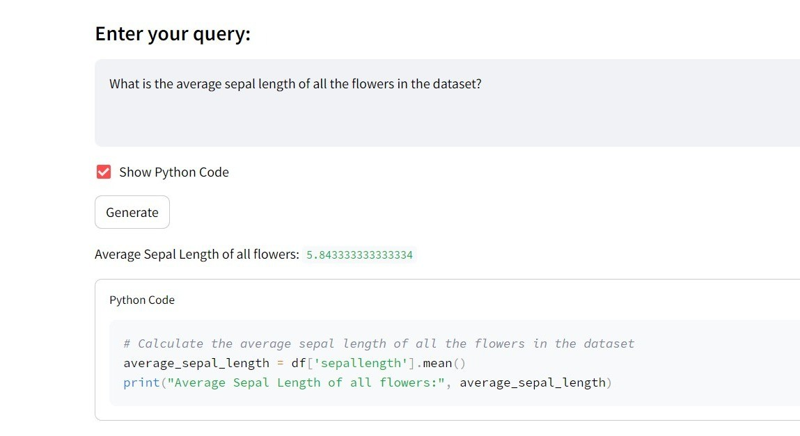
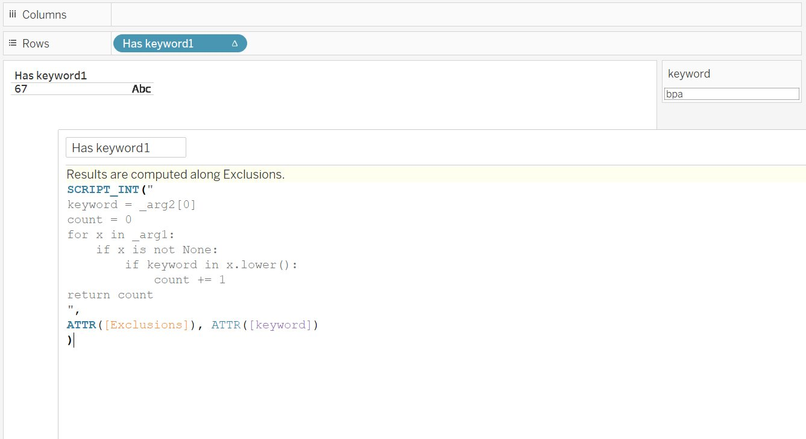
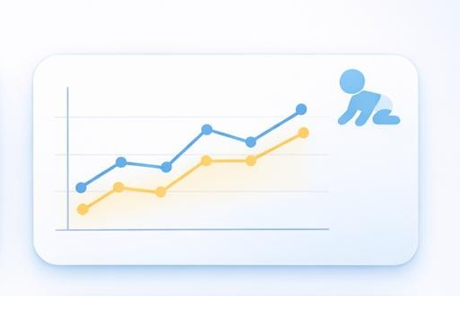
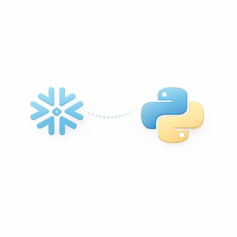
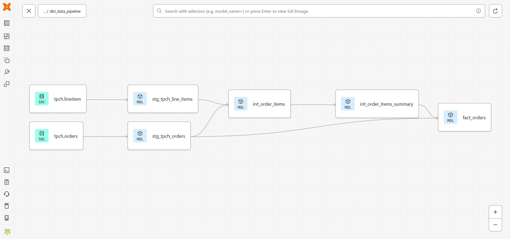

<!doctype html>
<html lang="en">
<head>
  <meta charset="utf-8" />
  <meta name="viewport" content="width=device-width, initial-scale=1" />
  <title>Rishitha Dubbaka – Portfolio</title>
  <meta name="description" content="Data analytics & visualization projects, experience, and skills." />

  <!-- Fonts: Inter -->
  <link rel="preconnect" href="https://fonts.googleapis.com" />
  <link rel="preconnect" href="https://fonts.gstatic.com" crossorigin />
  <link href="https://fonts.googleapis.com/css2?family=Inter:wght@400;500;600;700&display=swap" rel="stylesheet" />

  <!-- Icons: Feather -->
  <script src="https://unpkg.com/feather-icons"></script>

  <!-- Styles -->
  <link rel="stylesheet" href="styles.css" />

  <!--JS-->
  <script src="script.js" defer></script>
</head>
<body>
  <div class="page">
    <!-- Sidebar -->
    <aside class="sidebar">
      <div class="profile">
        
        <h1 class="name">Rishitha Dubbaka</h1>
        <p class="role">Data Science Intern <br> Great American Insurance Group</p>
        <p class="location"><i data-feather="map-pin" class="icon-sm"></i> United States</p>

        <div class="socials">
          <a href="https://www.linkedin.com/in/rishithadubbaka" target="_blank" rel="noopener"><i data-feather="linkedin"></i></a>
          <a href="https://github.com/rishithadubbaka" target="_blank" rel="noopener"><i data-feather="github"></i></a>
          <a href="https://medium.com/@rishithadubbaka" target="_blank" rel="noopener">
            <!-- Medium badge (outline only), still Feather-like -->
            <svg
              xmlns="http://www.w3.org/2000/svg"
              class="icon-sm icon-feather"
              viewBox="0 0 24 24"
              width="20" height="20"
              fill="none"
              stroke="currentColor"
              stroke-width="2"
              stroke-linecap="round"
              stroke-linejoin="round"
              aria-hidden="true"
            >
              <!-- Rounded square container -->
              <rect x="3" y="3" width="18" height="18" rx="4" ry="4"/>
              <!-- M -->
              <path d="M7 16V8l3 8 3-8v8"/>
              <!-- e -->
              <circle cx="16.5" cy="12" r="2.5"/>
              <line x1="14.7" y1="12" x2="18.3" y2="12"/>
            </svg>
          </a>
        </div>
  
        
         <div class="cta-row">
          <button type=button class="btn btn-outline" id="copy-email-btn" data-email="dubbakra@mail.uc.edu">
            Email Me
          </button>
          <a class="btn btn-light" href="assets/Rishitha_Dubbaka_Resume.pdf" target="_blank" rel="noopener">
            Resume
          </a>
        </div>
        
        <!-- Small, accessible message area -->
        <div id="copy-toast" aria-live="polite" class="toast" hidden>
          Email copied!
        </div>

        <div class="about">
          <h2 class="section-subtitle">About</h2>
          <p>
            Quantitatively minded analyst focused on building stakeholder‑ready insights, with experience
            in SQL, Python, and data visualization to support strategy and decision‑making.
          </p>
        </div>

        <!--<div class="skills">
          <h2 class="section-subtitle">Skills</h2>
          <div class="pill-row">
            <span class="pill">SQL</span>
            <span class="pill">Python</span>
            <span class="pill">R</span>
            <span class="pill">Tableau</span>
            <span class="pill">Excel</span>
            <span class="pill">Statistical modeling</span>
            <span class="pill">Sampling techniques</span>
          </div>
        </div>
      </div>-->
    </aside> 

    <!-- Main content -->
    <main class="content">
      <!-- Projects: stacked, no card style -->
      <section class="block projects-stack" id="projects">
        <h2 class="section-title">Projects</h2>

        <article class="project-row">
          <a class="project-thumb" href="https://github.com/rishithadubbaka/TabularQA" target="_blank" rel="noopener noreferrer" aria-label="Tabular QA">
            
          </a>
          <div class="project-body">
            <h3 class="project-title">
              <a href="https://github.com/rishithadubbaka/TabularQA" target="_blank" rel="noopener noreferrer" title="Open project details">Tabular QA</a>
            </h3>
            <div class="pill-row">
              <span class="pill">Streamlit</span>
              <span class="pill">NLP</span>
              <span class="pill">LLM</span>
              <span class="pill">SQLite</span>
              <span class="pill">Graphviz</span>
            </div>
            <p class="project-text">
              TabularQA is an AI-driven data analysis tool that leverages LLM to translate natural language queries into executable SQL and Python code. Developed using
              Streamlit, it allows users to upload CSV or database files and interactively explore data through automated insights and visualizations.
            </p>
            <a class="readmore" href="https://github.com/rishithadubbaka/TabularQA" target="_blank" rel="noopener noreferrer"  title="View this project">View →</a>
          </div>
        </article>

        <article class="project-row">
          <a class="project-thumb" href="https://medium.com/@rishithadubbaka/executing-python-scripts-in-tableau-with-tabpy-and-calculated-fields-2bc21374a030" target="_blank" rel="noopener noreferrer" aria-label="TabPy">
            
          </a>
          <div class="project-body">
            <h3 class="project-title">
              <a href="https://medium.com/@rishithadubbaka/executing-python-scripts-in-tableau-with-tabpy-and-calculated-fields-2bc21374a030" target="_blank" rel="noopener noreferrer" title="Open project details">Executing Python Scripts in Tableau</a>
            </h3>
            <div class="pill-row">
              <span class="pill">Tableau</span>
              <span class="pill">TabPy</span>
              <span class="pill">Data Analytics</span>
              <span class="pill">Business Intelligence</span>
            </div>
            <p class="project-text">
              This project demonstrates how to integrate Python with Tableau through TabPy(Tableau Python Server), enabling the execution of external Python Scripts within
              calculated fields. It Showcases advanced analytics use cases and includes a real-world proof of concept developed during my internship to extend Tableau beyond 
              it's built-in functionality
            </p>
            <a class="readmore" href="https://medium.com/@rishithadubbaka/executing-python-scripts-in-tableau-with-tabpy-and-calculated-fields-2bc21374a030" target="_blank" rel="noopener noreferrer" title="View this project">View →</a>
          </div>
        </article>

        <article class="project-row">
          <a class="project-thumb" href="https://medium.com/@rishithadubbaka/data-visualization-on-real-world-dataset-from-scratch-391ac76a70db" target="_blank" rel="noopener noreferrer" aria-label="UNICEF">
            
          </a>
          <div class="project-body">
            <h3 class="project-title">
              <a href="https://medium.com/@rishithadubbaka/data-visualization-on-real-world-dataset-from-scratch-391ac76a70db" target="_blank" rel="noopener noreferrer" title="Open project details">UNICEF Data Visualization</a>
            </h3>
            <div class="pill-row">
              <span class="pill">Matplotlib</span>
              <span class="pill">Plotly</span>
              <span class="pill">Exploratory Data Analysis</span>
              <span class="pill">Data Storytelling</span>
            </div>
            <p class="project-text">
          This project anlyses the burden of malnutrition in India using UNICEF data. I performed exporatory data analysis and built static and interactive visualizations 
              using Python, Matplotlib and Plotly to identify trends, variations and critical health indicators. 
            </p>
            <a class="readmore" href="https://medium.com/@rishithadubbaka/data-visualization-on-real-world-dataset-from-scratch-391ac76a70db" target="_blank" rel="noopener noreferrer" title="View this project">View →</a>
          </div>
        </article>

         <article class="project-row">
          <a class="project-thumb" href="https://medium.com/@rishithadubbaka/data-visualization-on-real-world-dataset-from-scratch-391ac76a70db" target="_blank" rel="noopener noreferrer" aria-label="Connecting to Snowflake">
            
          </a>
          <div class="project-body">
            <h3 class="project-title">
              <a href="https://medium.com/@rishithadubbaka/data-visualization-on-real-world-dataset-from-scratch-391ac76a70db" target="_blank" rel="noopener noreferrer" title="Open project details">Connecting to Snowflake using Python</a>
            </h3>
            <div class="pill-row">
              <span class="pill">Secure Data Access</span>
              <span class="pill">Pandas</span>
              <span class="pill">Snowpark</span>
              <span class="pill">SQL</span>
            </div>
            <p class="project-text">
              In this project I explore two approaches to connect Python applications with Snowflake: the Python Connector and the Snowpark Session object. The work showcases
              query execution, data retrieval, and programmatic interaction with the warehouse, providing a comparative understanding of both methods.
            </p>
            <a class="readmore" href="https://medium.com/@rishithadubbaka/data-visualization-on-real-world-dataset-from-scratch-391ac76a70db" target="_blank" rel="noopener noreferrer" title="View this project">View →</a>
          </div>
        </article>

         <article class="project-row">
          <a class="project-thumb" href="https://github.com/rishithadubbaka/Address-Extraction-Using-Snowflake-Cortex-LLM"  target="_blank" rel="noopener noreferrer" aria-label="Address Extraction">
            
          </a>
          <div class="project-body">
            <h3 class="project-title">
              <a href="https://github.com/rishithadubbaka/Address-Extraction-Using-Snowflake-Cortex-LLM"  target="_blank" rel="noopener noreferrer" title="Open project details">Address Extraction using Snowflake Cortex LLM</a>
            </h3>
            <div class="pill-row">
              <span class="pill">Snowflake Cortex</span>
              <span class="pill">LLM</span>
              <span class="pill">Data Extraction</span>
            </div>
            <p class="project-text">
              In this project, I applied Snowflake Cortex LLM capabilities to automate the extraction of structured address fields like street, city, state, and postal code from free-form text data. 
              The solution standardizes and cleans raw inputs directly within the Snowflake environment, making it easier for geocoding and mapping on dashboards.
            </p>
            <a class="readmore" href="https://github.com/rishithadubbaka/Address-Extraction-Using-Snowflake-Cortex-LLM" target="_blank" rel="noopener noreferrer" title="View this project">View →</a>
          </div>
        </article>

        <article class="project-row">
          <a class="project-thumb" href="https://medium.com/@rishithadubbaka/building-an-elt-data-pipeline-with-snowflake-and-dbt-35e5efd34692" target="_blank" rel="noopener noreferrer" aria-label="ELT Pipeline">
            
          </a>
          <div class="project-body">
            <h3 class="project-title">
              <a href="https://medium.com/@rishithadubbaka/building-an-elt-data-pipeline-with-snowflake-and-dbt-35e5efd34692" target="_blank" rel="noopener noreferrer" title="Open project details">ELT Data Pipeline using dbt and Snowflake</a>
            </h3>
            <div class="pill-row">
              <span class="pill">ELT</span>
              <span class="pill">GitHub</span>
              <span class="pill">Data Integration</span>
              <span class="pill">Data Transformation</span>
            </div>
            <p class="project-text">
              This project implements an end-to-end ELT pipeline using Snowflake and dbt to transform TPC-H data into analytics-ready models. I configured separate development 
              and production roles, enabling environment-specific deployments and controlled promotions of changes. The setup replicates real-world CI/CD-style workflows for anlytics engineering.
            </p>
            <a class="readmore" href="https://medium.com/@rishithadubbaka/building-an-elt-data-pipeline-with-snowflake-and-dbt-35e5efd34692" target="_blank" rel="noopener noreferrer" title="View this project">View →</a>
          </div>
        </article>

        <!-- Duplicate <article class="project-row"> for more projects -->
      </section>

      <!-- Experience -->
     <!-- <section class="block" id="experience">
        <h2 class="section-title">Experience</h2>
        <div class="timeline">
          <div class="timeline-item">
            <div class="timeline-meta">Mar 2022 – now</div>
            <div class="timeline-body">
              <h3 class="timeline-title">Data Analyst at Amazon</h3>
              <p class="timeline-text">
                Led development of analytics strategies supporting business goals. Managed a team of analysts to ensure
                data integrity, accuracy, and timeliness. Built executive KPIs and dashboards that improved product
                performance and forecasting accuracy.
              </p>
              <div class="pill-row compact">
                <span class="pill">SQL</span><span class="pill">Python</span>
                <span class="pill">Tableau</span><span class="pill">ETL</span>
              </div>
            </div>
          </div>
        </div>
      </section>-->

     <!-- Education -->
     <!--  <section class="block" id="education">
        <h2 class="section-title">Education</h2>
        <div class="timeline">
          <div class="timeline-item">
            <div class="timeline-meta">2018 – 2022</div>
            <div class="timeline-body">
              <h3 class="timeline-title">B.S. in Quantitative Economics</h3>
              <p class="timeline-text">Coursework: Econometrics, Statistical Learning, Optimization.</p>
            </div>
          </div>
        </div>
      </section>
    </main>
  </div>-->

  <footer class="footer">
    <div class="container">
      <p>© <span id="year"></span> Rishitha Dubbaka • All rights reserved</p>
    </div>
  </footer>

  <script>
    // Replace icons and update year
    feather.replace();
    document.getElementById('year').textContent = new Date().getFullYear();
  </script>
</body>
</html>
